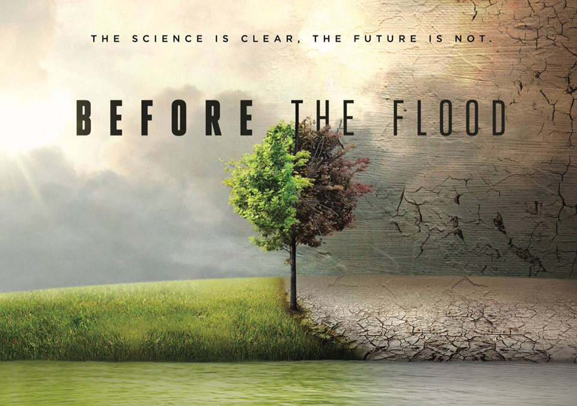
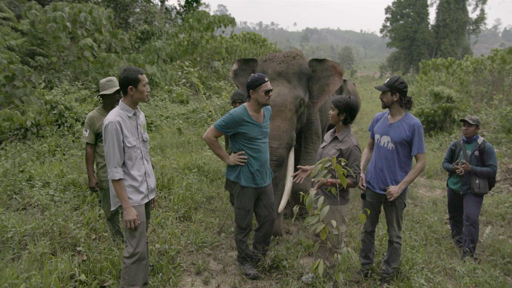

Un viaje para investigar las consecuencias del calentamiento global y las medidas que se toman para revertirlo.
El actor y activista ambiental, Leonardo DiCaprio, produjo este documental, el segundo en su carrera, para explicar el cambio climático, mostrar sus consecuencias reales en varios lugares del mundo y llamar a todas las personas a la acción y al compromiso para revertir esta situación.
BEFORE THE FLOOD
Before the Flood (en Hispanoamérica: Antes que sea tarde) es una película documental de 2016 que trata sobre el cambio climático y es dirigida por Fisher Stevens. Ha sido producida en colaboración de Stevens, Leonardo DiCaprio, James Packer, Brett Ratner, Trevor Davidoski, Jennifer Davisson Killoran y Martin Scorsese como productor ejecutivo. Fue revelada por DiCaprio el 9 de septiembre en el Festival Internacional de Cine de Toronto y fue estrenada el 30 de octubre del 2016 en el canal de televisión National Geographic Channel.
La película hace hincapié en que "la mitad de los dirigentes todavía no creen en el cambio climático.",algo que resalta el actor que, con su odisea quería "saber lo lejos que hemos llegado y si hay algo que pueda hacer nada para detenerlo."

Tras su reciente nombramiento como Mensajero de la ONU contra el cambio climático, Leonardo DiCaprio emprende uno de esos viajes que te cambian la vida. DiCaprio buscará la respuesta a una pregunta inquietante: ¿se puede hacer algo antes de que sea tarde?
El documental, "Before the Flood" ("Antes de que sea tarde"), producido por National Geographic, visitará zonas remotas de Groenlandia, las cálidas selvas de Sumatra y los salones del Vaticano, con el objetivo de analizar los efectos devastadores del cambio climático.
En el metraje ha incluido desgarradoras escenas de glaciares en cascada en el mar, inundaciones, los horribles efectos de la contaminación y algunas duras estampas de osos polares desesperados. "Hemos sabido de esto por décadas... y el problema parece ser cada vez peor y peor."

Cambiar los hábitos de consumo y la manera como nos relacionamos con el medio ambiente son temas cuya importancia es notoria. “Antes que sea tarde” es el documental que lanzó en octubre pasado el actor estadounidense Leonardo DiCaprio, en el que haciendo uso de argumentos fuertes con bases científicas e imágenes que ponen en evidencia los cambios que ha sufrido el medio ambiente en los últimos años, busca crear conciencia sobre los impactos que nuestra forma de vida tiene en la naturaleza, y por ende, en los seres humanos.
Como Mensajero de la paz de las Naciones Unidas, especialmente de las luchas contra el cambio climático, DiCaprio, de la mano del director Fisher Stevens, busca que con “Antes que sea tarde” se generen alternativas y acciones que mitiguen las consecuencias de esta problemática. Científicos, expertos, políticos y generadores de opinión de diferentes países acompañan al actor mostrando evidencias claras de los impactos (contaminación, deshielo de los polos, deforestación), mientras plantean alternativas para aminorarlos. Además, con el fin de generar reflexión al respecto, “Antes que sea tarde” muestra también cómo la discusión de esta problemática se ve invisibilisada en ocasiones por intereses políticos y económicos, principalmente relacionados con las industrias extractivas.
A lo largo de los 96 minutos que dura el documental, DiCaprio y Fisher transmiten de forma clara su mensaje central: la solución ante el cambio climático está en las manos de todos. Disminuir el consumo de carne y aumentar el de vegetales, frutas y aves, promover y hacer uso de energías renovables, controlar y disminuir la contaminación generada por las grandes industrias, y evitar el uso de productos que tienen como base el aceite de palma, son solo algunas de las alternativas que podemos implementar para preservar las especies y ecosistemas que están en peligro de extinción, y proteger las comunidades indígenas y la vida de nuestro planeta. El cambio climático es sin duda una realidad, por lo que reconocer su existencia y cambiar algunos de nuestros hábitos es fundamental. Nuestras acciones individuales son generadoras de cambios, por eso: queremos que nos cuentes cómo desde tu hogar implementas acciones positivas que ayuden a prevenir el calentamiento global y promueven la preservación de nuestro planeta.